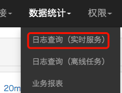
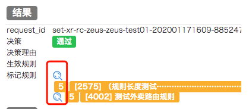
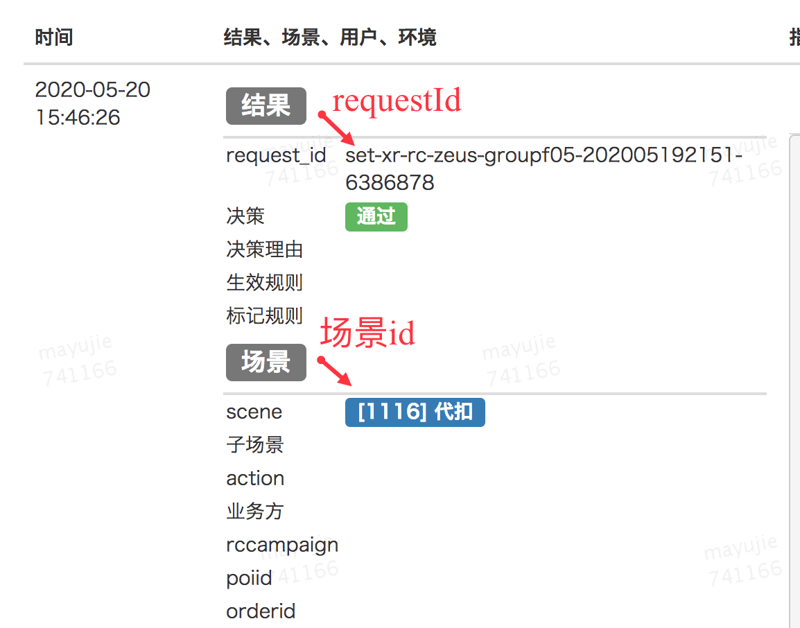
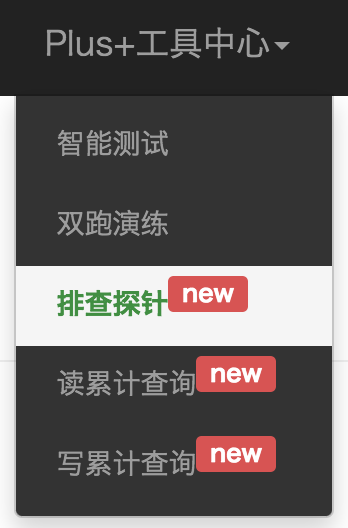
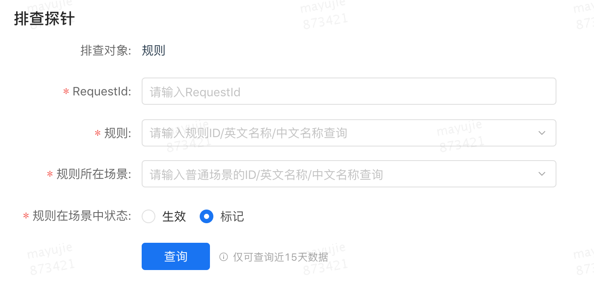
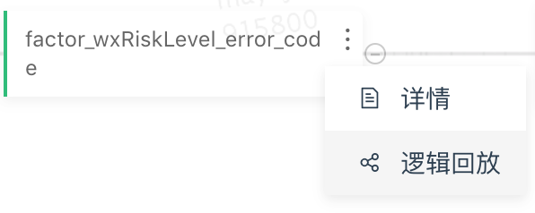
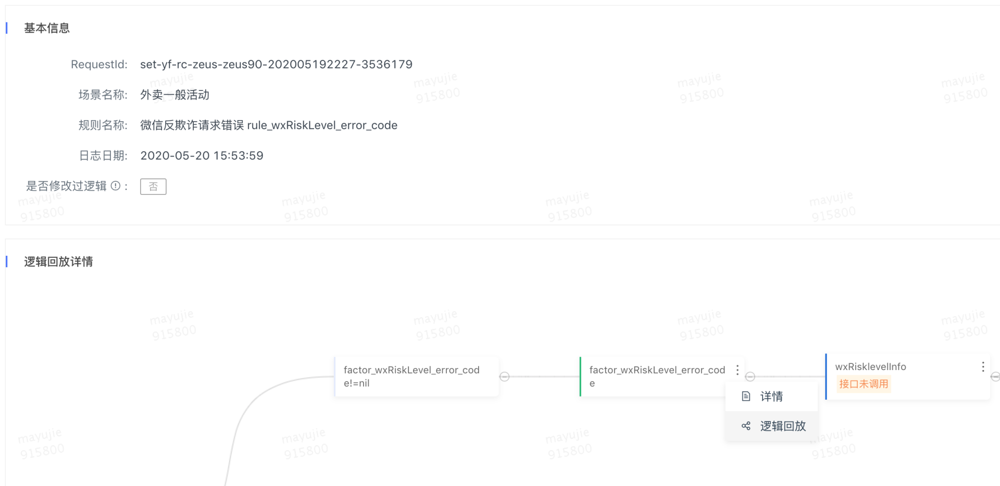
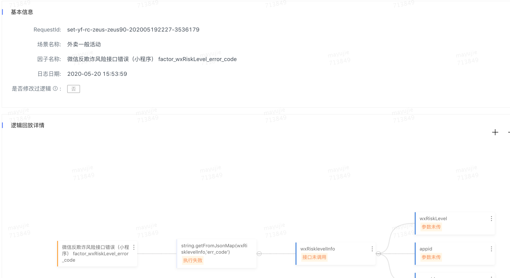
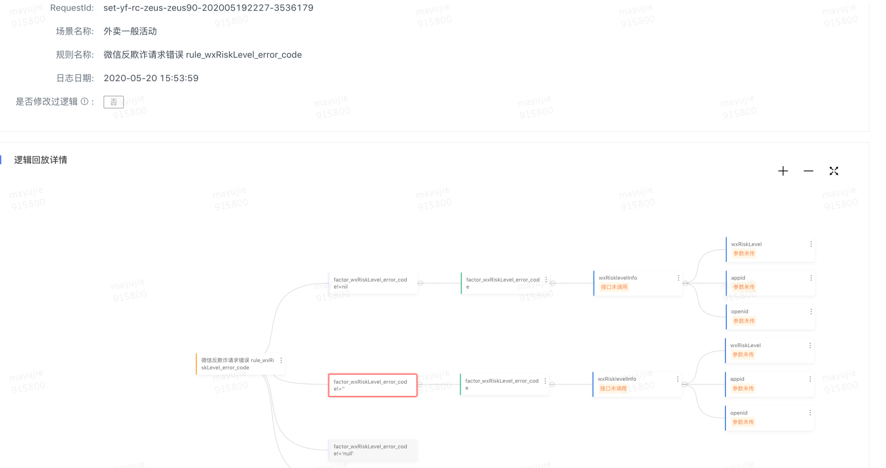
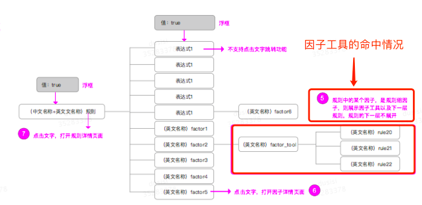

说明：排查探针
一、背景&解决问题
用户对配置的规则、因子（普通、累计）命中不符合预期无法快速定位问题，例如，规则为什么命中，为什么未命中等原因
排查探针，是通过规则执行的日志，将规则执行流程进行回放并提供给用户，可快速定位问题
流程概述
二、规则执行查询
Step1:查询日志详情
|
操作说明 |
页面 |
|---|---|
|
【入口】 1.实时服务日志 |
 |
Step2: 查看规则/因子执行回放信息
|
操作说明 |
页面 |
|---|---|
|
【命中规则】 点击日志查询结果中，生效规则和标记规则命中名称前的放大镜图标 |
 |
|
【未命中规则】 1.在日志进入排查探针查询页面 2.展示查询的规则和执行的场景 |
 复制日志查询页面的requestId，进入排查探针查询页面 查询入口：  输入【requestId】，【规则id】【场景id】，【规则在场景中的状态】，得到查询结果  |
|
【查询命中/未命中规则对应的的因子】 在规则结果页面，点击待查询因子的右下角，选择逻辑回放  |
规则执行结果页面  因子执行结果页面  |
step 3：结果分析
|
结果说明 |
页面 |
|---|---|
|
展示规则执行的每一个段逻辑和逻辑的结果 是否修改过逻辑：规则执行~查询时这段时间规则是否有过变化 起始节点： 子节点：规则中的单层表达式、因子和参数 边：节点与节点间的连线，表明两节点的关联关系 map图颜色 表达式，规则 因子，参数 导致规则命中的核心路径 未执行的表达式 其他：已执行但未命中的逻辑 【标签的说明】见特殊说明部分 【反馈查询结论】 本次查询后改规则的命中是符合预期还是不符合预期，如实填写即可 用于功能对不符合预期查询的结果统计 |
 |
异常标签说明
|
标签 |
含义 |
后续处理建议 |
|---|---|---|
|
必传参数为空 |
日志的本条请求中，有因为必须业务提供的参数，业务没传或者传空值导致规则命中 |
同上游RD沟通，让其提供参数；或修改策略使用其他参数 |
|
参数未传 |
日志的本条请求中，参数有空值 |
同上游RD沟通，让其提供参数；或修改策略使用其他参数 |
|
超时 |
日志的本条请求中，需要调用外部接口，但接口超时导致参数为空值 |
同下游RD沟通，让其提升接口性能；或修改策略使用其他数据 |
|
读条件不满足 |
累计因子/外部接口的读取条件不满足，未读取响应的数值 |
确认是否符合预期；或者修改读取条件 |
|
未发送累计 |
累计因子值恒为0或1，产生的原因是近4天内没有发送累计 |
需要同上游RD沟通，让其发送累计 |
|
接口调用失败 |
日志的本条请求中，需要调用外部接口，但接口调用失败，可能为接口不可用、服务异常等 |
同下游RD沟通，让其确认接口可用性 |
四、FAQ
Q1:为什么会存在未执行的表达式？
--A：表达式自左至右执行，两种情况导致表达式提前结束：
1.若段逻辑已经可以得出表达式结果，后续逻辑段将不再执行
如：rule1的逻辑：factorA && factorB || （factorC && factorD），在表达式执行时若 factorA：True 、factorB：True，则（factorC && factorD）将不再需要进行计算就可以判断该规则的运行结果为True。
2.若逻辑执行中出现异常，则后续表达式不再执行
如：rule2的逻辑：!factorA && factorB，factorA= null时，逻辑运算出现异常，factorB则不再执行
Q2: 鼠标移动到节点的信息上，浮框显示的信息是什么？
--A：浮框内显示的为该段逻辑的执行结果
Q3: 为什么有些规则的map图逻辑全部展开了而有些规则的map图只展示部分？
--A：系统默认最多展示6层节点信息，若规则比较复杂，逻辑超过6层则收起。需要用户手动点开查看
Q4: 引用因子工具的规则怎么查看命中情况？
--A：提供因子工具输出参数是由哪些规则命中的信息展示，具体因子工具内部规则命中的情况，可以点击规则详情查看
